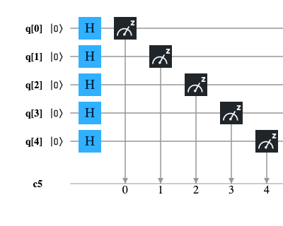
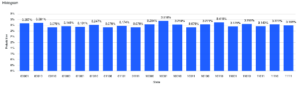
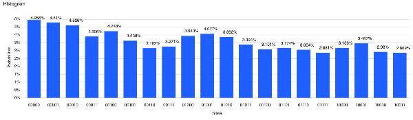
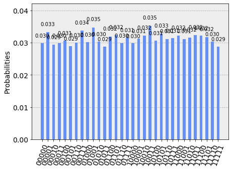
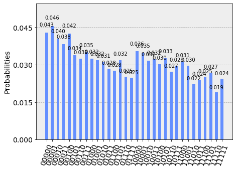

Generazione di un numero casuale
Generare numeri casuali su un computer quantistico non è cosa difficile in quanto l'impredicibilità della misura di un qubit in stato di sovrapposizione è di fatto una forma di casualità naturale. Tradurre tale idea in codice è relativamente semplice: prendendo n qubit (quindi il numero casuale ottenuto da ogni esecuzione sarà un numero intero da 0 a 2n - 1) con stato iniziale uguale a $|0\rangle$, si applica su ciascuno degli n qubit la porta quantistica Hadamard e infine si effettua la misura. La porta Hadamard applicata a $|0\rangle$ porta il qubit nello stato di sovrapposizione: $$\frac{|0\rangle + |1\rangle}{\sqrt{2}}$$ e ciò significa che la misura avrà la probabilità del 50% di essere uguale a 0 e del 50% di essere uguale a 1.
Schema circuitale
Considerando di avere a disposizione un computer quantistico con 5 qubit, lo schema circuitale che realizza quanto detto sopra è il seguente:

Codice in QASM
Il seguente programma è la traduzione in linguaggio QASM del circuito illustrato sopra; questo programma è stato testato sia sul computer quantistico 'ibmq_london' di IBM che sul simulatore 'qasm_simulator' di IBM.
OPENQASM 2.0;
include "qelib1.inc";
qreg q[5];
creg c[5];
h q[0];
h q[1];
h q[2];
h q[3];
h q[4];
measure q[0] -> c[0];
measure q[1] -> c[1];
measure q[2] -> c[2];
measure q[3] -> c[3];
measure q[4] -> c[4];Codice in Python con Qiskit
Il seguente programma è la traduzione in Python Qiskit del circuito illustrato sopra; questo programma è stato testato all'interno di un Jupyter Notebook utilizzando come backend sia il computer quantistico 'ibmq_london' di IBM che il simulatore 'qasm_simulator' di IBM.
q = QuantumRegister(5, 'q')
c = ClassicalRegister(5, 'c')
circuit = QuantumCircuit(q, c)
circuit.h(q[0])
circuit.h(q[1])
circuit.h(q[2])
circuit.h(q[3])
circuit.h(q[4])
circuit.measure(q, c)Codice in Microsoft .NET Core Q# per simulatore quantistico
Il seguente programma è la traduzione in Microsoft Q# Qiskit del circuito illustrato sopra; questo programma è stato testato su un Linux con .NET Core, runtime Q# e simulatore quantistico Microsoft installati.
namespace ComputationalMindset.QuantumExperiments
open Microsoft.Quantum.Intrinsic;
open Microsoft.Quantum.Canon;
open Microsoft.Quantum.Measurement;
operation RandomNumberGenerator() : (Result, Result, Result, Result, Result)
{
using (q = Qubit[5])
{
H(q[0]);
H(q[1]);
H(q[2]);
H(q[3]);
H(q[4]);
let result = (M(q[0]), M(q[1]), M(q[2]), M(q[3]), M(q[4]));
ResetAll(q);
return result;
}
}
Risultati su IBM Q Experience
Entrambi i programmi per IBM Q Experience sono stati eseguiti con un numero di shot uguale a 8192 sia sul simulatore 'qasm_simulator' di IBM che sul computer quantisco IBM 'ibmq_london' di IBM
ottenendo il risultato atteso, ovverosia una distribuzione uniforme di tutte le combinazioni di 5 bit.
La non perfetta uniformità mostrata nel caso dei computer quantistici reali rispetto ai simulatori è riconducibile a rumore.
Nota: Data la natura stocastica di questo codice, i singoli specifici risultati possono variare. Si consideri di eseguire il codice più volte.

Risultato dell'esecuzione del programma scritto in QASM su simulatore IBM 'qasm_simulator' (prime 20 combinazioni)

Risultato dell'esecuzione del programma scritto in QASM su computer quantistico IBM 'ibmq_london' (prime 20 combinazioni)

Risultato dell'esecuzione del programma scritto in Python + Qiskit su simulatore IBM 'qasm_simulator'

Risultato dell'esecuzione del programma scritto in Python + Qiskit su computer quantistico IBM 'ibmq_london'
Risultati su simulatore Microsoft
L'esecuzione del programma scritto in Q# per .NET Core ha prodotto il risultato atteso, ovverosia una distribuzione uniforme di tutte le combinazioni di 5 bit.
Nota: Data la natura stocastica di questo codice, i singoli specifici risultati possono variare. Si consideri di eseguire il codice più volte.
| Binario | Decimale | Conteggio | Probabilità (%) |
|---|---|---|---|
| 00000 | 00 | 257 | 3.14% |
| 00001 | 01 | 265 | 3.24% |
| 00010 | 02 | 240 | 2.93% |
| 00011 | 03 | 255 | 3.11% |
| 00100 | 04 | 237 | 2.89% |
| 00101 | 05 | 265 | 3.24% |
| 00110 | 06 | 267 | 3.26% |
| 00111 | 07 | 255 | 3.11% |
| 01000 | 08 | 257 | 3.14% |
| 01001 | 09 | 256 | 3.13% |
| 01010 | 10 | 241 | 2.94% |
| 01011 | 11 | 246 | 3.00% |
| 01100 | 12 | 251 | 3.06% |
| 01101 | 13 | 264 | 3.22% |
| 01110 | 14 | 272 | 3.32% |
| 01111 | 15 | 265 | 3.24% |
| 10000 | 16 | 223 | 2.72% |
| 10001 | 17 | 244 | 2.98% |
| 10010 | 18 | 262 | 3.20% |
| 10011 | 19 | 245 | 2.99% |
| 10100 | 20 | 255 | 3.11% |
| 10101 | 21/td> | 248 | 3.03% |
| 10110 | 22 | 251 | 3.06% |
| 10111 | 23 | 256 | 3.13% |
| 11000 | 24 | 272 | 3.32% |
| 11001 | 25 | 267 | 3.26% |
| 11010 | 26 | 292 | 3.56% |
| 11011 | 27 | 227 | 2.77% |
| 11100 | 28 | 278 | 3.39% |
| 11101 | 29 | 262 | 3.20% |
| 11110 | 30 | 257 | 3.14% |
| 11111 | 31 | 260 | 3.17% |
| Totale: | 8192 | 100.00% | |
Risultato del programma scritto in Q# ed eseguito su Linux con .NET Core e simulatore quantistico Microsoft
Media
Download del codice completo
Il codice completo è disponibile su GitHub.
Questo materiale è distribuito su licenza MIT; sentiti libero di usare, condividere, "forkare" e adattare tale materiale come credi.
Sentiti anche libero di pubblicare pull-request e bug-report su questo repository di GitHub oppure di contattarmi sui miei canali social disponibili nell'angolo in alto a destra di questa pagina.